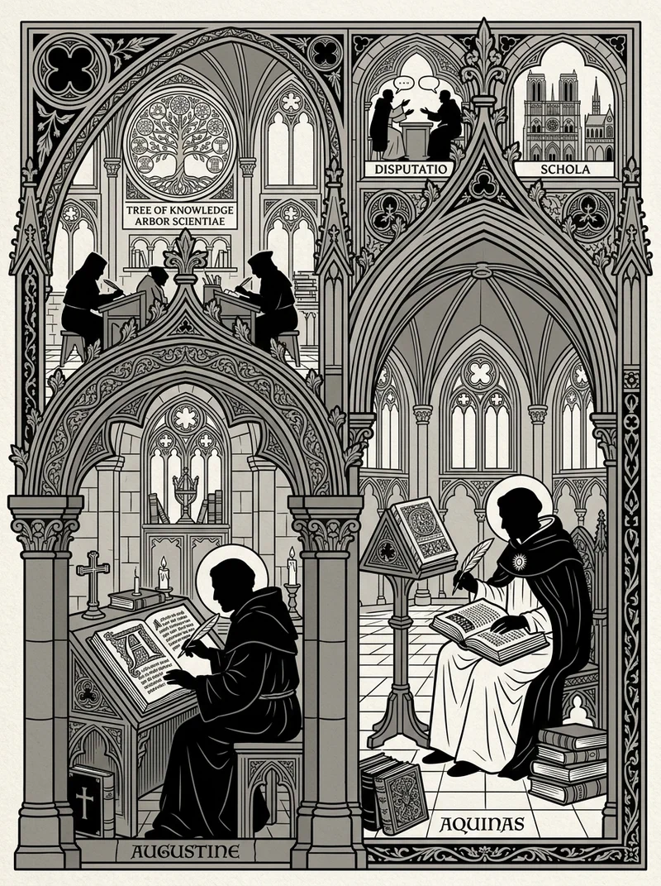

🔍 ZoomWichtige Denker
Kerngedanken
Das Mittelalter verbindet Theologie und Philosophie. Die Suche nach einem harmonischen Verhältnis zwischen göttlicher Offenbarung und rationaler Erkenntnis prägt die Epoche.
Wissen testen
Bist du bereit, dein Wissen über diese Epoche auf die Probe zu stellen?
Zum Quiz